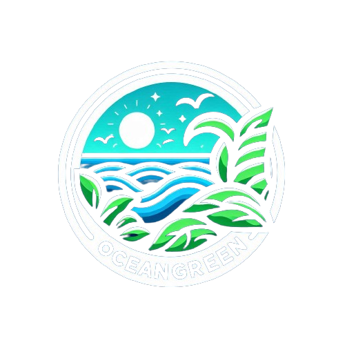
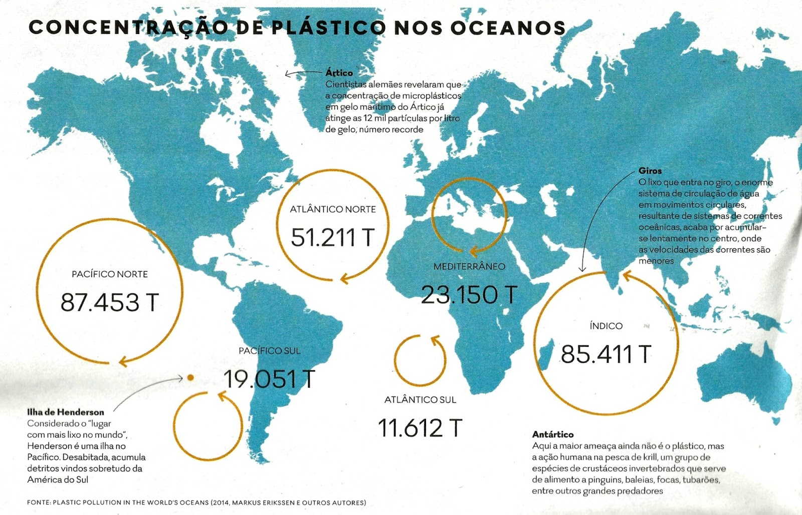

<!DOCTYPE html>
<html lang="pt-br"></html>
<head>
    <meta charset="UTF-8">
    <meta name="viewport" content="width=device-width, initial-scale=1.0">
    <title>OceanGreen</title>
    <link rel="stylesheet" href="../style/styles.css">
</head>
<body>
    <header>
        <div class="logo"></div>
        <div class="menu-toggle">
            <div class="bar"></div>
            <div class="bar"></div>
            <div class="bar"></div>
        </div>
        <a href="menu.html"><h1>OceanGreen</h1></a>
        <nav>
            <ul>
                <li><a href="../html/perfil.html">Perfil</a></li>
                <li><a href="../html/atividade.html">Atividades</a></li>
                <li><a href="../html/mapa.html">Mapa</a></li>
                <li><a href="../html/forum.html">Fórum</a></li>
                <li><a href="../html/evento.html">Eventos</a></li>
                <li><a href="../html/educacao.html">Educação</a></li>
                <li><a href="../html/integrante.html">Integrantes</a></li>
                <li><a href="../html/index.html">Sair</a></li>
            </ul>
        </nav>
    </header>
   
    <main>
        
        <section id="map">
            <h2>Mapa de Áreas Poluídas</h2>
            <div id="map-container"></div>
            <p>Esboço onde ficaria o mapa das áreas poluídas no Oceano, detectadas por satélites ou contribuintes.</p>
        </section>

    </main>

    <footer>
        <p>&copy; 2024 OceanGreen. Todos os direitos reservados.</p>
    </footer>

    <script src="https://code.jquery.com/jquery-3.6.0.min.js"></script>
    <script src="../script/scripts.js"></script>
    
</body>
</html>